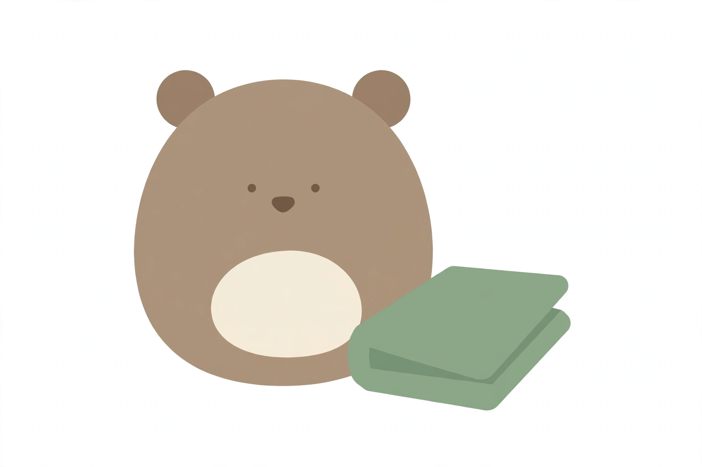
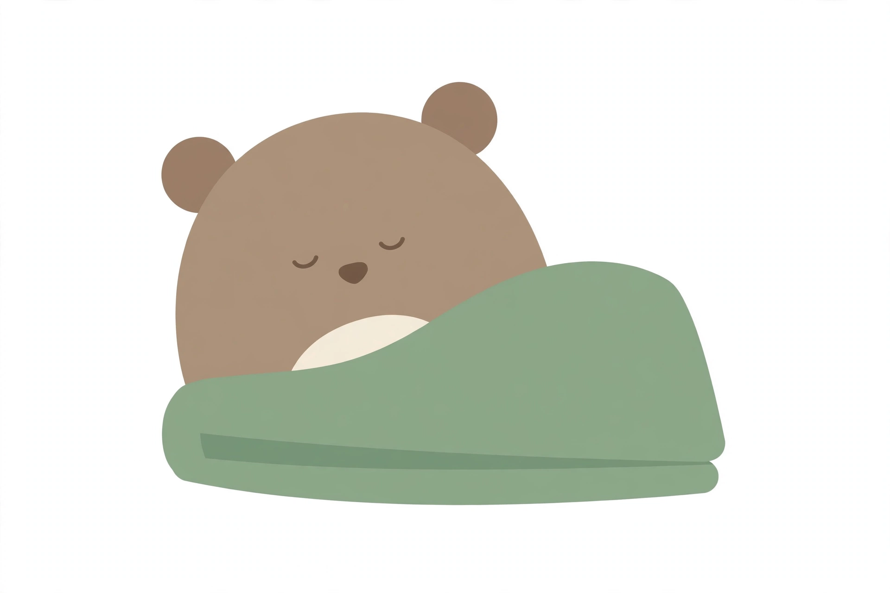

Board v2 is drawn from the audience research and Wally's burrow: one warm ground, one ink, one calm sage lead, and soft tints. The four bright area colours are gone. Areas are told apart by name and icon, not by shouting.
Tell Wally how today feels, and the day shapes itself around it. A rough day can lighten the gym, soften the plan, and leave room to rest. Nothing is ever lost, and nothing is ever a telling-off.

Round body, two ears, dot eyes, cream belly, sage blanket folded beside him. He sits beside you and fixes nothing.

The same Wally, tucked into the sage blanket, eyes closed in happy curves. Rest is his favourite state.
Guide art by the Lab's simple-flat make: flat shapes only, no texture, white presentation. The rich scene frames stand as world and mood reference only.
One hand-built SVG sprite, one stroke system, one sage. No rainbow coding, no emoji, no gradients.
At small sizes Wally reads as a round body, two ears and the sage blanket. His shape never changes. He is never sad, never disappointed, never a coach.
Ink on Cream 11.14 (AAA) · Ink on Sage Tint 10.04 (AAA) · Ink on Sage Mist 6.52 (AA) · Burrow Sage on Cream 5.18 (AA) · White on Burrow Sage 5.95 (AA). Taupe and the pale tints are surfaces and character colour, never small text.
Zilla Slab (display) + Karla (body). Open Font Licence, embeddable and self-hostable. Grounded and storybook in display, human and clear in body. Neither family is claimed by another app in the program.
Fit App brand board v2 · drawn by the Build desk in Wally's world · for the Innovation Lab design read, then HQ, then Ilse